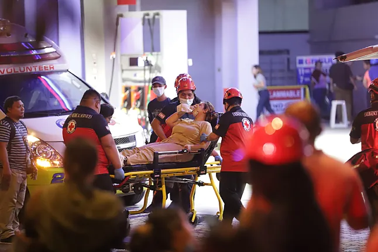
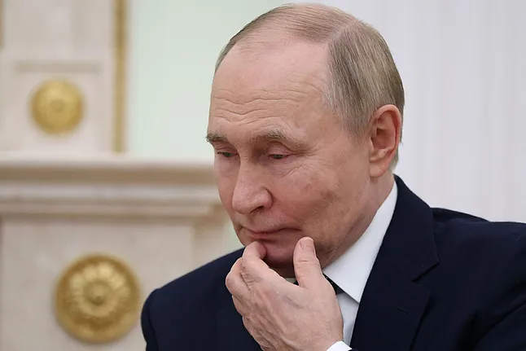

Al menos 32 muertos en el centro de Filipinas tras un terremoto de magnitud 6,9
Al menos 32 personas han muerto y 37 han resultado heridas en el centro de Filipinas, informaron este miércoles fuentes oficiales y medios locales, después de que un terremoto de magnitud 6,9 golpeara la región la pasada noche.
En la ciudad de Bogo, situada en la región central de Cebú y una de las más cercanas del epicentro, fallecieron 27 personas a las que se suman otras cinco en la vecina San Remigio, según datos de la Oficina Provincial de Información provincial citados por la cadena de televisión filipina ABS-CBN.
Una portavoz del centro de información, Ainjeliz Orong, precisó en declaraciones a la cadena que al menos 37 personas resultaron heridas.
El gobierno provincial de Cebú pidió en su página oficial de Facebook que voluntarios médicos ayuden en las tareas de socorro tras el terremoto.
"Podría haber personas atrapadas bajo los edificios derrumbados", dijo a la AFP el responsable provincial de rescate, Wilson Ramos, citando los trabajos en curso en San Remigio y Bogo. Dijo desconocer cuántas personas están desaparecidas.
Las labores de rescate durante la noche se vieron dificultadas por la oscuridad y las 379 réplicas reportadas por el Instituto Filipino de Vulcanología y Sismología, añadió.
Varias carreteras de la localidad también sufrieron daños y hubo cortes en el suministro eléctrico en Cebú y las islas centrales cercanas, aunque se restableció en varias zonas importantes poco después de la medianoche.
"Sentimos el temblor en la estación, fue muy fuerte. Vimos nuestro casillero moviéndose de un lado a otro. Nos mareamos un poco, pero todos estamos bien", dijo Joey Leeguid, un bombero de San Fernando.
El sismo de magnitud 6,9 tuvo lugar a las 21:59 hora local (13:59 GMT) del martes a una profundidad de diez kilómetros cerca de la ciudad de Bogo, según la agencia sismológica de Filipinas (Phivolcs), desatando además una alerta sobre un posible tsunami localizado que fue retirada este miércoles.
Rusia se retira del tratado europeo contra la tortura
El presidente ruso, Vladimir Putin, ha firmado una ley para retirar a Rusia de un convenio europea contra la tortura, en unos momentos que Moscú se desvincula de los organismos occidentales de los que fue expulsado o abandonó tras su ofensiva en Ucrania.
Rusia fue expulsada en marzo de 2022 del Consejo de Europa, un organismo internacional que supervisa los derechos humanos, pero técnicamente había permanecido como parte de su Convenio Europeo para la Prevención de la Tortura.
El acuerdo histórico tiene como objetivo fortalecer los derechos de las personas privadas de libertad y otorga facultades para que los observadores visiten prisiones y centros de detención.
Este lunes, Putin ha firmado una ley que denuncia el convenio. Las notas explicativas de la norma, que fue aprobada anteriormente por el Parlamento ruso, acusan al Consejo de Europa de "discriminación" por negarse a nombrar un representante ruso en los órganos estatutarios.
El mes pasado, el Ministerio de Exteriores ruso dijo que retirarse del convenio no "perjudicaría" a los ciudadanos rusos y que Rusia "sigue comprometida con sus obligaciones internacionales en materia de derechos humanos".
Pero dos relatores especiales de la ONU dijeron a principios de este mes que la decisión de retirarse del tratado "levanta señales de alerta sobre lo que está ocurriendo tras las rejas" en las cárceles rusas.
La decisión se produce después de que organismos de vigilancia internacionales hayan denunciado en reiteradas veces las presuntas violaciones de los derechos humanos por parte de las autoridades rusas durante su ofensiva en Ucrania.
La semana pasada, la OSCE afirmó que Moscú era responsable de "violaciones generalizadas y sistemáticas" del derecho internacional en el tratamiento de los prisioneros de guerra ucranianos, incluidas "ejecuciones arbitrarias". Un informe de la oficina de derechos de la ONU también ha concluido que Rusia "ha sometido a los detenidos civiles ucranianos a patrones consistentes de serias violaciones" del derecho internacional.